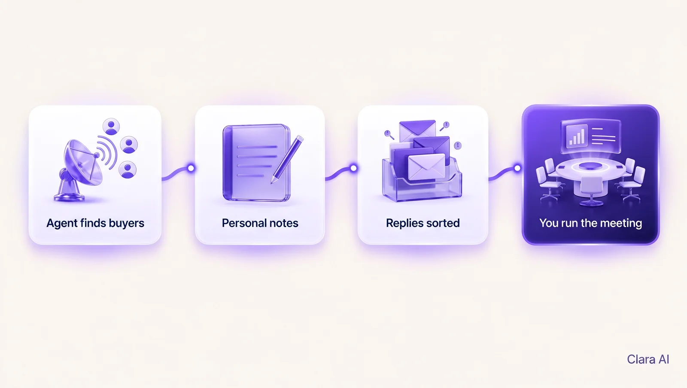

To book B2B sales meetings on LinkedIn, pick a narrow buyer, connect with a short relevant note, start a real conversation, and ask for the meeting only once there is interest. Then follow up a few times and stop. The method is simple. What breaks it is inconsistency, which is the part an AI agent can take over while a person runs the calls.
Most teams treat LinkedIn as a place to send pitches. The ones that book meetings treat it as a place to start conversations, and they do it every week without gaps.
Here is the sequence that works for most B2B sellers:
Each step has a number you can track. If acceptances are low, fix the target or the note. If replies are low, fix the opening question. If replies are good but meetings are few, fix the ask.
Narrow beats broad. "Heads of sales at mid-sized logistics firms in India" gives you something specific to say. "Decision makers" gives you nothing. Write down the problem your buyer has this quarter, because your first message should connect to it.
It also helps to start small. Fifty well-chosen people will teach you more than five hundred random ones.
Keep it under three sentences. Say why you are writing to them, in terms of their work, and do not ask for anything big. For example: you noticed they hire for a certain role, or their team recently launched something, and you work with similar teams. That is enough.
Ask when the other person has shown interest: a reply, a question, or a comment about a problem you solve. A cold request for thirty minutes from a stranger usually gets ignored. A request after a short exchange feels natural. Offer two specific times and say what the call will cover and how long it takes.
Most meetings come from follow-up, because people are busy and miss the first message. Use two or three follow-ups, spaced several days apart, each adding something new such as a short idea or a relevant example. Stop immediately when someone replies or says no. LinkedIn's User Agreement restricts automated activity that breaks its rules, so keep volume modest and personal either way.
The daily work is repetitive: finding people, sending notes, following up, sorting replies. That is where an agent saves time. The conversation that earns the meeting is where a person matters.

If you are weighing options, see our comparison of a LinkedIn outreach agent and an SDR hire, or how to handle LinkedIn outreach replies for B2B sales teams.
We only share dated, real numbers. As of 21 Oct 2026, the agent had reached 345 people for Haique Surfaces, with 107 accepting and 14 replying. For Sanjeet Ray, a business coach, October 2026 brought 149 invites, 43 connections, 12 conversations and 3 warm leads. Your numbers will depend on your offer, market and target list.
Judge it over a full month on reach, acceptances, real replies and booked calls.
Clara AI is a 14-person AI team that builds and runs agents for 19 businesses. We set up the AI LinkedIn Outreach Agent for you and run it. A person on our team checks the work, and warm replies reach you on WhatsApp so you can confirm the meeting. Tell us who you sell to, and we aim to show you a first demo within 7 days. For inbound search traffic, see our AI SEO Agent.